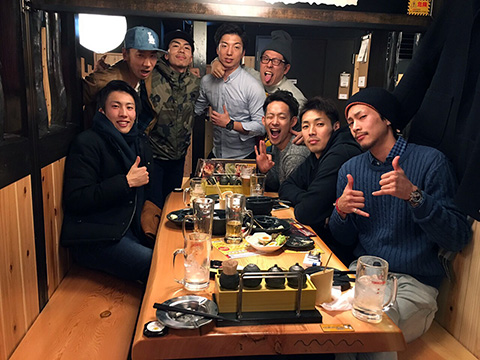
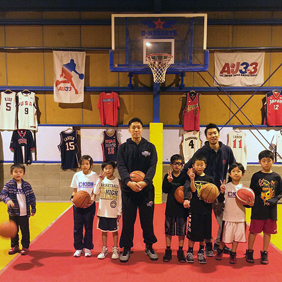
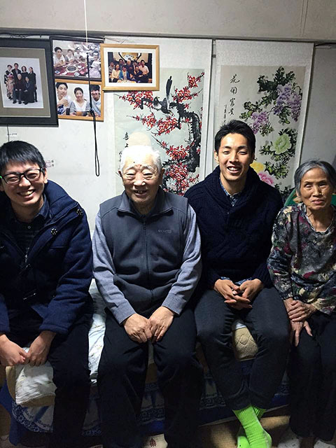
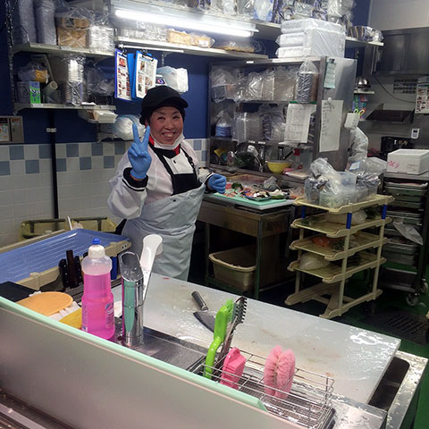
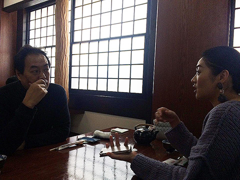
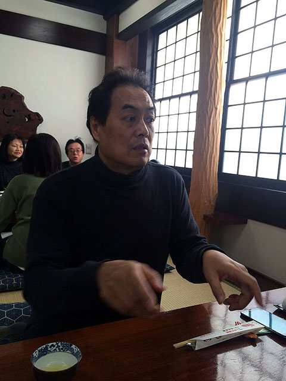
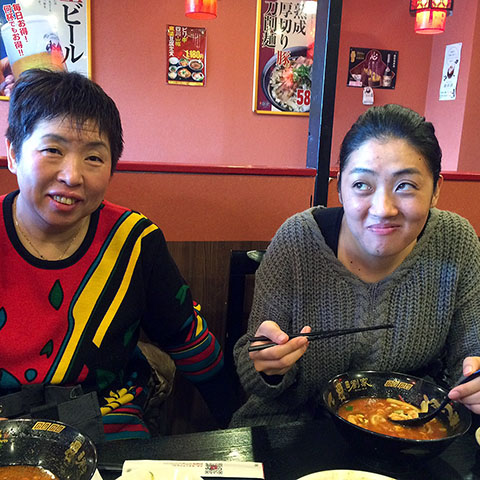

NBLサイバーダインつくばロボッツ夏達維選手のとある一週間
愛知出身、夏選手によるプロ生活の内容を中心としたブログ｢夏ログ｣！
久々名古屋でのオフ！
オールジャパンでレバンガ北海道さんに負けてしまい4日から名古屋でのオフ生活！！
久々の名古屋はリラックスできました^ ^
オフの前半はひたすらトレーニング！ 油断するとすぐに太ってしまうので^^;
体脂肪率が２%落ちました！地元のジム"グリーンスポーツクラブ"のみなさんありがとうございました^ ^
昔からのバスケ仲間の人達とバスケもできてよかったです！！
高校生の時に毎週電車で通ってた"庄内緑地公園"で昔からのバスケ仲間とバスケ！！もう15年以上通ってる人達ww みんなただのバスケ馬鹿ww
ちなみにここは200円で体育館の半面が使えますよぉ
あと、向陽高校と中央高校にもおじゃまさせてもらいました^ ^
もちろんディーナゲッツにもおじゃまさせてもらいましたd(￣ ￣) たった一年みないだけで子供たちが大きくなってたし、うまくなってたT^T
僕の事を目標としてもらえるように日々がんばらなければ！！
たまにはバスケ意外のお話をしますとw
おじいちゃん、おばあちゃんに会いに行ったり、お母さんの職場にいきなり訪問もしました笑
 
相変わらず元気に働いてましたね(^ ^)
顔が僕とそっくりww
お父さんと妹とも出かけましたね！！
 夏家はものすごくみんな仲良しですw
会いたい人全員に会えたわけではないですが、充実できました^ ^
まもなくシーズン後半戦！
やるしかない！！
プレイオフ進出に向けて再スタート！！！
2016年！がんばるぞ(￣Д￣)ﾉ
PS.僕は今年で30歳になるのですが、実は名古屋で占いに行ったら僕は32歳までに結婚するらしいです笑
いったい誰と？笑
では、またw